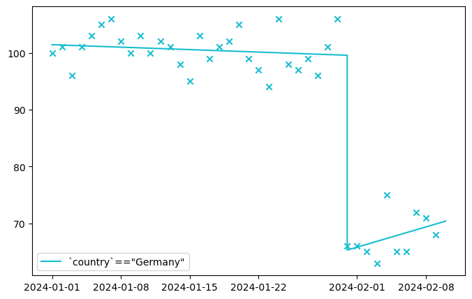
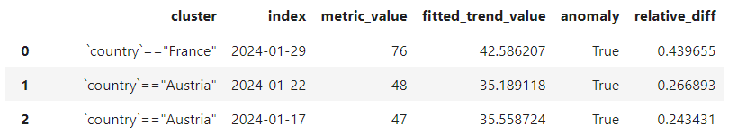
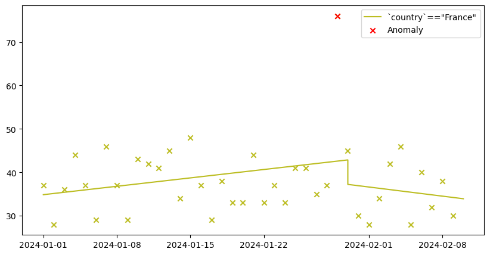

Usage Guide
What is anomeda.DataFrame
anomeda.DataFrame is class used to store the time-series data and its metadata. It inherits pandas.DataFrame. One of the implications of that fact is that anomeda.DataFrame.__init__ processes the same parameters as its ancestor and a few more. Specifically:
Parameters:
-
*args–Parameters for initialization a pandas.DataFrame object. Other parameters must be passed as **kwargs only.
-
**kwargs–Parameters for initialization a pandas.DataFrame object. Other parameters must be passed as **kwargs only.
-
measures_names('list | tuple' = None) –A list containing columns considered as measures. If None, your data is supposed to have no measures.
-
measures_types('dict' = None) –A dictionary containing 'categorical' and/or 'continuous' keys and list of measures as values. Continuous measures will be discretized automatically if not presented in discretized_measures parameter. If your data has any measures, you must provide its' types.
-
discretized_measures_mapping('dict' = None) –Custom dictionary with a mapping between a discrete value of the meauser and corresponding continous ranges. The lower bound must be including, the higher bound must be excluding. It uses the following format:
{ 'measure_name': { discrete_value_1: [[continuous_threshold_min_inc, continuous_threshold_max_excl], [...]], descrete_value_2: ... } } -
discretized_measures('dict' = None) –A dictionary containig names of the measures as keys and array-like objects containing customly discretized values of the measure. If not provided, continuous measures will be discretized automatically.
-
index_name('str | list | None' = None) –An index column containg Integer or pandas.DatetimeIndex. If None, index is taken from the pandas.DataFrame.
-
metric_name(str) –A metric column.
-
agg_func–Way of aggregating metric_name by measures. Can be 'sum', 'avg', 'count' or callable compatible with pandas.DataFrame.groupby.
As you may have noticed, most of the parameters are optional. If you don't specify a parameter, a default value will be used. Or you will be notified once you use anomeda.fit_trends, anomeda.find_anomalies or other methods that you need to specify something additionally.
Note that it is recommended to use datetime-like index or integer index. You can map change the type of your index to datetime, for example, using pandas.to_datetime. Anomeda will try to change the type automatically, but it may cause unexpected results. If it failes, it will try to convert index values to int64.
Here is some examples of how you can initialize a new anomeda.DataFrame:
# With just a pandas.DataFrame and metric name
anomeda.DataFrame(pandas_df, metric_name='my_metric')
# With some measures
anomeda.DataFrame(pandas_df, measures_names=['A', 'B', 'C'], metric_name='my_metric')
# In a pandas.DataFrame style
anomeda.DataFrame(
{
'A': [0, 1, 2],
'B': [3, 4, 5],
'C': [6, 7, 8],
'my_metric': [10, 20, 30]
}
measures_names=['A', 'B', 'C'],
metric_name='my_metric'
)
# With a discretization mappging
anomeda.DataFrame(
pandas_df,
measures_names=['A', 'B', 'C'],
metric_name='my_metric',
discretized_measures_mapping={
'A': {
0: [[20, 80]], # map values from 20 to 80 to 0 - "normal values"
1: [[0, 20], [80, 100]], # map values from 0 and 20 or between 80 and 100 to 1 - "abnormal values"
}
}
)
# And many more...
NOTE 1
Some pandas methods are not yet adapted for anomeda. They return a new pandas.DataFrame instead of a anomeda.DataFrame. You just need to initialize an anomeda object with a returned object in that case.
NOTE 2
The scale of undex increments is extracted automatically. It can be 1 (Integer, if your index are integers) or a part of a timestamp (second, minute, hour, etc).
For example, if your index consists of two values ['2024-01-01 00:00:00', '2024-01-01 00:01:00'], the step is hour. However, the step may become minute once you add only one value - ['2024-01-01 00:00:00', '2024-01-01 00:01:00', '2024-01-01 00:01:01'], since minute is the smallest increment now.
By default, anomeda does not propagate metric values for the missing index values in clusters. However, you can specify a different option by providing metric_propagate parameters to anomeda.fit_trends. It can be "zeros" (fill missing metric values with zeros), "ffil" (use the last present metric value) or None (do not fill any missing values, treat them as it is).
A list of methods available to manipulate anomeda.DataFrame, such as getters, setters, copying, modifying the object, etc. Please follow anomeda.DataFrame API Reference for the details. Her is the full list:
copy_anomeda_df
get_agg_func
get_discretization_mapping
get_discretized_measures
get_index_name
get_measures_names
get_measures_types
get_metric_name
replace_df
set_agg_func
set_discretization_mapping
set_discretized_measures
set_measures_names
set_measures_types
set_metric_name
How we handle continuous measures
Measures with continuous values are mapped to discrete ones by sklearn.mixture.BayesianGaussianMixture by default. It helps to divide the data into interpretable clusters. Usually the mapped values represent more or less isolated ranges where the feature is concentrated, like "tiny", "medium", "large" or other categories. The anomeda._to_discrete_values is responsible for the transformation, you may redefine it if needed.
You can pass specific discrete values of a continuous measure both when creating an anomeda.DataFrame object and later. See discretized_measures parameter of anomeda.DataFrame.__init__ or anomeda.DataFrame.set_discretized_measures. Alternatively, you may pass a mapping describing how to transform your continuous values into discrete ones, see the discretized_measures_mapping parameter of anomeda.DataFrame.__init__ or anomeda.DataFrame.set_discretization_mapping.
You can then access the mapping and the discretized values by anomeda.DataFrame.get_discretization_mapping and anomeda.DataFrame.get_discretized_measures respectively.
How we fit trends
Anomeda can fit trends of a time-series. Why trends, but not a trend? Becuase it can automatically identify when a trend changes and return not one, but actual number of trend.
All the work is made by anomeda.fit_trends method. It can fit trends, plot them and assign it to the anomeda.DataFrame._trends attribute for reusing.
Parameters:
-
data(DataFrame | (ndarray[int], ndarray[float]) | (DatetimeIndex, ndarray[float])) –Object containing metric values. If numpy.ndarray, a tuple of arrays corresponding to x (data points) and y (metric values) respectively.
-
trend_fitting_conf(dict, default:{'max_trends': 'auto', 'min_var_reduction': 0.75}) –Parameters for calling anomeda.extract_trends() function. It consists of 'max_trends' parameter, which is responsible for the maximum number of trends that you want to identify, and 'min_var_reduction' parameter, which describes what part of variance must be reduced by estimating trends. Values close to 1 will produce more trends since more trends reduce variance more signigicantly. Default is {'max_trends': 'auto', 'min_var_reduction': 0.75}.
-
save_trends(bool, default:True) –If False, return pandas.DataFrame with trends description without assigning it to the anomeda.DataFrame._trends.
-
breakdown(no | all - clusters | list[str], default:'no') –If 'no', the metric is grouped by date points only. If 'all-clusters', then all combinations of measures are used to create clusters for fitting trends within them. If list[str], then only combinations of measures specified in the list are used.
-
metric_propagate('"zeros" | "ffil" | None' = None, default:None) –How to propogate aggregated time-series for missing index values. - zeros: Let metric for missing index be equal 0. For example, aggregated metric values '2024-01-01': 1 '2024-01-03': 2 Will be propagated as '2024-01-01': 1 '2024-01-02': 0 '2024-01-03': 2 - ffil: Let metric for missing index be equal the last observed value. For example, aggregated metric values '2024-01-01': 1 '2024-01-03': 2 Will be propagated as '2024-01-01': 1 '2024-01-02': 1 '2024-01-03': 2 - None: Use only present metric and index values.
-
min_cluster_size(int, default:None) –Skip clusters whose total size among all date points is less than the value.
-
max_cluster_size(int, default:None) –Skip clusters whose total size among all date points is more than the value.
-
plot(bool, default:False) –Indicator if to plot fitted trends. anomeda.plot_trends is responsibe for plotting if the flag is True.
-
df(bool, default:True) –Indicator if to return a pandas.DataFrame containing fitted trends.
-
verbose(bool, default:False) –Indicator if to print additional output.
Returns:
-
resp(DataFrame) –An object containing information about trends
Examples:
>>> fitted_trends = anomeda.fit_trends(
data,
trend_fitting_conf={'max_trends': 3},
metric_propagate='zeros',
min_cluster_size=3,
plot=True,
df=True
)
The underlying algorithm starts with one trend. It estimates the parameters of a linear function. by optimizing.
After one trend is fitted, the algorithm tries to find a point which will reduce the an interesting metric, variance of an absolute error (VAE) multiplied by 90-th percentile of an absolute error, if we "break" the trend there and reestimate trends for the left and the right part of a time-series. The left and right trends which reduce the VAE the most are now our current trends. If we already fitted enough trends, defined by max_n_trends, or the current VAE is at least by min_var_reduction lower from what we saw using one trend, the algorithm stops and returns the trends. Otherwise, it starts to "break" each trend into two pieces the same way as described.
When a breaking point is being searched, either all points with presented data or a randomly sampled points are used as candidates. What is important, a kind of a regularization is used during the search. Choosing a point located closer to the ends of an index range is penalized more than closer to the center. We use PDF of Beta-function as a multiplicator. It was made to balance the number of samples in the left and right parts of the range. The low number of samples in one of the parts may cause a lower error variance there, which will hinder extracting long and consistent trends.

The method returns all the trends and the breaking points:

If you plot one of them with anomeda.plot_trends, you may see what the result looks like:

While fitting trends, the method also stores clusters to anomeda.DataFrame._clusters. If you want to query them in other methods, remember that you must query them exactly how they are called in this property (only measures may have a different order). The syntax is the following: "`measure_name_1`==measure_value_1 and `measure_name_1`==measure_value_1 and ...". Also, note that discretized values of continous measures are used as measure values in clusters definitions.
How we detect anomalies
The algorithm of detecting anomalies is based on comparing observed values with values of a fitted trend. Sounds simple, doesn't it?. The interesting part is how the anomalies are identified based on its differences from a trend.
Once differences between observed values and fitted trend are calculated, we apply the Local Outlier Factor algorithm with a provided n_neighbors. It identifies "isolated" (without many neighbors) points or clusters and mark them as outliers. So, we find differences which are too rare, i.e. little or no points have similar difference. Such an alghorithm let us handle data with a high variance where lot's of differences are far from the trend, as well as not to mark points as anomalies if there are none of them. Once we identified abnormal clusters, we filter points with only the lowest and the highest differences, meaning for each low-value anomaly there must be no normal points with a difference lower than given, and similarly for the high-value anomalies - no points must have a difference higher than given. Finally, the amount of points to return is customized with p_large and p_low parameters which set the fraction of the most extreme points to return. The parameters vary from 0 to 1.
Anomalies are identified with anomeda.find_anomalies method.
Parameters:
-
data(DataFrame | (ndarray[int], ndarray[float])) –Object containing metric values to be analyzed. Trends must be fitted for the object with anomeda.fit_trends() method if anomeda.DataFrame is passed.
-
clusters(list, default:None) –List of clusters to plot. The objects in the list are queries used in pandas.DataFrame.query. Make sure you pass the cluster names exactly as they they appear in the fitted trends.
-
anomalies_conf(dict, default:{'p_large': 1., 'p_low': 1., 'n_neighbors': 3}) –Dict containing 'p_large' and 'p_low' values. Both are float values between 0 and 1 corresponding to the % of the anomalies with largest and lowest metric values to be returned. For example, if you set 'p_low' to 0, no points with abnormally low metric values will be returned; if 0.5, then 50% of points with abnormally values will be returned, etc. If some of the keys is not present or None, 1 is assumed. 'n_neighbors' means number of neighbors parameter for sklearn.neighbors.LocalOutlierFactor class. The class is used to find points with abnormally large MAE. The more the parameter, typically, the less sensitive the model to anomalies.
-
return_all_points(bool, default:False) –If False, only anomaly points are returned. If True, all points with anomalies marks are returned. Default False.
-
trend_fitting_conf(dict, default:None) –Used only if data is not anomeda.DataFrame, but numpy arrays, to run anomeda.fit_trends method for them. Parameters are similar to those you would pass to the argument anomeda.fit_trends(..., trend_fitting_conf=...).
Returns:
-
res(DataFrame) –A DataFrame containing fields 'cluster', 'index', 'metric_value', 'fitted_trend_value', 'anomaly'.
Examples:
>>> anomeda.fit_trends(data)
>>> anomeda.find_anomalies(data)

